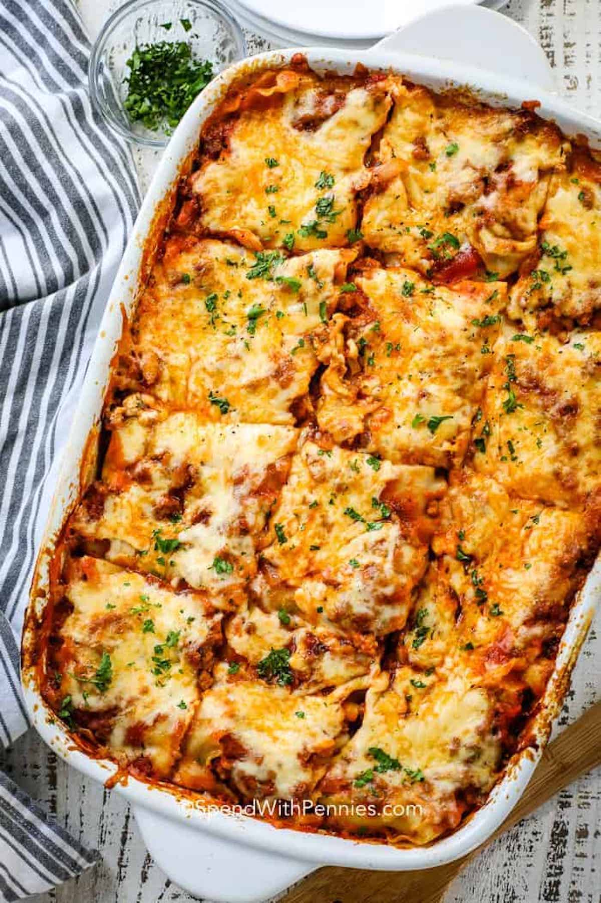

Lasagna

Description
While there are a few steps to this lasagna recipe, it’s easy to make and has so much flavor. This dish can be made ahead of time and freezes well either before or after baking!
Ingredients
- Lasagna noodles
- Tomato sauce
- Minced Beef
- Garlic
- Olive Oil
- Cheese
- Onions
Steps
- Warm up a pot and add the olive oil, chopped onions and garlic.
- Add the beef
- Add the sauce
- Create the lasagna, layer by layer.
- Serve